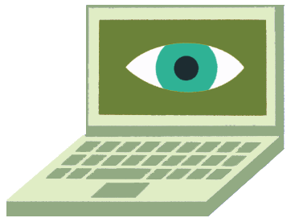

Grundlæggende Web
5. - 23. februar
Her startede min rejse på Københavns Erhvervsakademi. I dette tema fik jeg mine første værktøjer, som skulle gå hen og blive hele mit fundament som Multimediedesigner.
Jeg stiftede blandt andet bekendtskab med HTML, CSS og Figma for første gang, og de endte alle tre med at blive mine tætte kompagnoner til min studiestartsprøve.
Se min studiestartsprøve HER
Se min proces for min studiestartsprøve HER